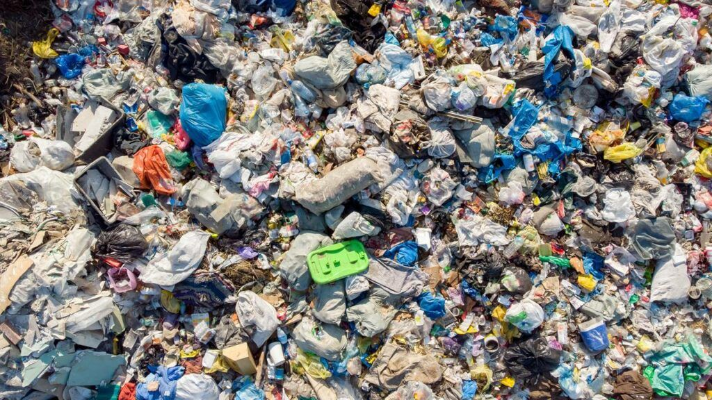

คนไทย 1 คนสร้างขยะเฉลี่ยวันละ 1.14 กิโลกรัม หรือเกือบ 400 กิโลกรัมต่อปี การรู้ที่มาและคุณสมบัติของขยะแต่ละชิ้น คือหัวใจของการเริ่มต้นลดขยะ
เราผลิตขยะเหล่านี้อยู่ทุกวันโดยไม่รู้ตัว
ถุงหูหิ้ว หลอดกาแฟ ช้อนส้อมพลาสติก และแก้วน้ำ ใช้เวลาผลิตเพียงไม่กี่วินาที ใช้จริงไม่ถึง 20 นาที แต่อยู่บนโลกนานกว่า 450 ปี
สัดส่วน ~ 21%อาหารกินเหลือ วัตถุดิบเน่าเสีย และเปลือกพืช เมื่อถูกทับถมในบ่อขยะจะเกิดก๊าซมีเทนที่มีผลต่อภาวะเรือนกระจกมากกว่า CO2 ถึง 25 เท่า
สัดส่วน ~ 46%กล่องพัสดุช้อปปิ้งออนไลน์ ซองขนม กล่องกระดาษ และบับเบิ้ลกันกระแทก เติบโตขึ้นอย่างรวดเร็วตามพฤติกรรมการสั่งซื้อออนไลน์
สัดส่วน ~ 18%สายชาร์จ หูฟังพัง ถ่านไฟฉาย และเครื่องใช้ไฟฟ้า มีสารตะกั่ว แคดเมียม และสารพิษที่ซึมลงสู่น้ำบาดาลหากไม่แยกทิ้งเฉพาะ
สัดส่วน ~ 15%สิ่งที่เราทิ้งในวันนี้ อาจยังคงอยู่บนโลกนี้ไปอีกหลายร้อยปี
มากกว่าแค่ Recycle คือการปรับวิธีคิดตั้งแต่ก่อนตัดสินใจซื้อ
เปลี่ยนความคิดก่อนซื้อ "จำเป็นจริงไหม หรือแค่อยากได้ชั่วคราว?" เลือกของที่ทนทานและเป็นมิตรกับสิ่งแวดล้อม
ปฏิเสธสิ่งที่ไม่จำเป็น เช่น ถุงพลาสติกจากร้านสะดวกซื้อ หลอดกาแฟ ช้อนส้อมพลาสติก และโบรชัวร์กระดาษ
ลดปริมาณการสร้างขยะ เช่น ซื้อสินค้าแบบเติม (Refill) ลดการกินอาหารเหลือ สั่งอาหารแต่พอดี
พกถุงผ้า กระบอกน้ำพกพา กล่องข้าว นำถุงพลาสติกเก่ามาใช้ซ้ำเป็นถุงขยะ หรือนำขวดแก้วมาใส่เครื่องปรุง
ของพังอย่าเพิ่งทิ้ง ซ่อมแซมเสื้อผ้าที่ขาด อุปกรณ์ไฟฟ้าที่ชำรุด หรือเฟอร์นิเจอร์ เพื่อยืดอายุการใช้งานให้นานที่สุด
คัดแยกขวดพลาสติก กระป๋อง แก้ว กระดาษ ล้างให้สะอาดก่อนส่งต่อไปยังโรงงานรีไซเคิลเพื่อผลิตเป็นวัสดุใหม่
นำเศษผักผลไม้และเศษอาหารมาหมักทำปุ๋ยอินทรีย์ ปลูกผักสวนครัว คืนแร่ธาตุสู่ธรรมชาติโดยไม่ต้องส่งไปฝังกลบ
น้ำหวาน ชานม หรือเศษแกงที่ตกค้างจะทำให้ขยะรีไซเคิลปนเปื้อนและเน่าเสีย
บ้วนน้ำล้างคราบไขมัน 1 รอบ ช่วยป้องกันมด แมลงสาบ และกลิ่นเหม็น
เหยียบขวดหรือพับกล่องลังให้แบน ช่วยประหยัดพื้นที่จัดเก็บและลดพลังงานขนส่ง
เพื่อความปลอดภัยต่อพี่ๆ พนักงานเก็บขยะ ช่วยปกป้องเจ้าหน้าที่จากการถูกบาดและสัมผัสสารเคมีอันตราย
ลองทดสอบความรู้ในเกม